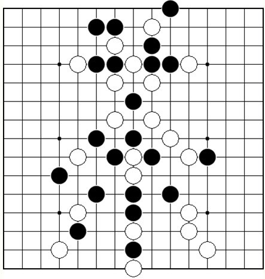

【茶馆专题】为五子茶刊第二期封面设计的【茶】字VCF
首页
习题专区
#1 【茶馆专题】为五子茶刊第二期封面设计的【茶】字VCF 作者：蓝天蓝 发表时间：2011-4-22 21:13:02
为五子茶刊第二期封面设计的【茶】字VCF

［此帖子已被 蓝天蓝 在 2011-4-22 21:14:11 编辑过］
［ 被感动的人 于 2011-4-22 21:35:24 时花20金币送鲜花一朵］
［ 冰雪笑醉 于 2011-4-26 11:48:35 时花20金币送鲜花一朵］
#2 Re:【茶馆专题】为五子茶刊第二期封面设计的【茶】字VCF 作者：被感动的人 发表时间：2011-4-22 21:35:12
哈~ 乍一看“姚志勇”仨字吓了我一跳。还以为姚老师实名注册了呢
#3 Re:【茶馆专题】为五子茶刊第二期封面设计的【茶】字VCF 作者：被感动的人 发表时间：2011-4-22 21:40:34
等我有时间了也试试，希望能做得出来。阿弥陀佛~
#4 Re:【茶馆专题】为五子茶刊第二期封面设计的【茶】字VCF 作者：棋道无尽 发表时间：2011-4-23 11:09:10
=======上图对应的爱五子棋谱代码如下，以便你拆解：========
f14g13g14i14j15h12i13k12j12i11i12e12f12g11g12g9h10i9h8e7f8e4d6d2e3h1h2h3h4h6h5h7g7j8i7k7l7k4j5k3f5l2i5g5k5l5j6l4g3f2e5f4f6d4f9f7f11f10f15f13j11h13j13j14j10j9g10h11k10i10m8
======================================================想当的长，到后边有点支路，不过线路还算比较好选择
［ 蓝天蓝 于 2011-4-23 12:25:12 时花20金币送鲜花一朵］
［ 朗星 于 2011-4-23 12:26:10 时花20金币送鲜花一朵］
#5 Re:【茶馆专题】为五子茶刊第二期封面设计的【茶】字VCF 作者：与郎共五 发表时间：2011-4-26 22:15:06
主题帖缺乏美感，给个雏形。
=======上图对应的爱五子棋谱代码如下，以便你拆解：========
e12f12g12h12i12j12k12j13j11f13f11h10g9f8e7d6i9j8k7l6f6g6h6i6j6h7h5h4h3h2f4e3j4k3
======================================================